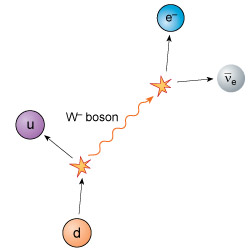
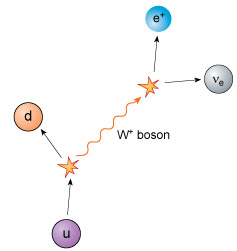
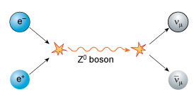

8 Weak interactions¶
__Weak interaction__s manifest themselves as reactions, or decays, in which some particles may disappear, while others appear. There is no structure that is bound together by a ‘weak force’, but weak interactions are vital for understanding the world around us.
Weak interactions were involved in most of the reactions in the very early Universe by which particles changed from one sort to another. They are therefore largely responsible for the overall mixture of particles from which the current Universe is made.
The most common example of a weak interaction is beta-decay and, as you saw earlier, there are three related processes, each of which is a different type of beta-decay. In each of these three processes the nucleus involved will change from one type of element to another, as a result of either increasing or decreasing its proton content by one. Each process relies on the weak interaction.
8.1 W and Z bosons¶
In the same way that photons and gluons are the quanta involved in electromagnetic and strong interactions, respectively, weak interactions involve other quanta – known as __W boson__s and __Z boson__s.
In fact, there are two types of W boson, one with negative electric charge, the W− boson, and one with positive electric charge, the W+ boson. The two (charged) W bosons each have a mass of about 80 GeV/c2 whereas the (neutral) Z boson has a mass of about 90 GeV/c2. In weak interactions, W and Z bosons interact with each other, as well as with all quarks and leptons. The Universe would be an impossibly boring place without them.
As you know, the beta-minus decay of a nucleus occurs when a neutron turns into a proton, with the emission of an electron and an electron antineutrino. At most, a few MeV of energy are released in this process, corresponding to the difference in mass between the original nucleus and the resultant nucleus. At the quark level, the explanation is that a down quark, d, with a negative electric charge equal to one-third that of an electron is transformed into an up quark, u, with a positive electric charge equal to two-thirds that of a proton.
A W− boson is emitted with one unit of negative electric charge, so conserving electric charge in the process. The mass energy of the W− boson is about 80 GeV, so it cannot possibly emerge from the nucleus as there are only a few MeV of energy available. In accordance with the energy–time uncertainty principle it therefore rapidly decays to produce an electron and an electron antineutrino, setting the energy accounts straight.

Figure 8 A beta-minus decay process involves the creation and disappearance of a W− boson. A down quark decays into a W− boson and an up quark. The W− boson subsequently decays into an electron and an electron antineutrino.
In weak interactions, the total number of quarks minus the total number of antiquarks is the same both before and after the interaction. The number of leptons is also conserved. In the example of beta-minus decay, there are no leptons initially present, and after the interaction there is one lepton and one antilepton – a net result of zero again.
This is the explanation for why neutrinos and antineutrinos are produced in beta-decays. If they were not, then the rule of lepton conservation would be violated. Notice also that the production of a charged lepton is always accompanied by the corresponding flavour of neutrino. In all weak interactions:
electric charge is conserved
the number of quarks minus the number of antiquarks is conserved
the number of leptons minus the number of antileptons is conserved
flavour changing of quarks or leptons is allowed, as long as these three rules are obeyed.
Question¶
Following the example of beta-minus decay above, explain how beta-plus decay involves the creation and demise of a W+ boson. Check that electric charge is conserved, that the number of quarks minus the number of antiquarks is conserved, and that the number of leptons minus the number of antileptons is conserved.
Answer¶

Figure 9 A beta-plus decay process involves the creation and disappearance of a W+ boson. An up quark decays into a W+ boson and a down quark. The W+ boson subsequently decays into a positron and an electron neutrino.
The electric charge is initially that of an up quark (+23e). The products of the initial decay are a down quark with charge −13e, and a W+ boson with charge +e, so charge is conserved here. The W+ boson subsequently decays into a positron with charge +e and a neutral electron neutrino, so charge is again conserved.
There is one quark present both before and after the decay, so the total number of quarks minus the number of antiquarks is conserved and equal to one. There are no leptons present initially, but one lepton (the electron neutrino) and one antilepton (the positron) are present at the end. Therefore, the total number of leptons minus the number of antileptons is also conserved and equal to zero. The third of the quanta involved in weak interactions is the Z0 boson with zero electric charge. An example of the type of reaction involving the Z0 boson is a collision between an electron and a positron. This can create a Z0 boson from the mass energy of the electron–positron pair, which subsequently decays into a muon neutrino and a muon antineutrino pair. Notice that there is one lepton and one antilepton both before and after the interaction.

Figure 10 An electron–positron pair undergo annihilation, creating a Z0 boson which subsequently decays to create a muon neutrino and muon antineutrino pair.
8.2 The survival of the neutron¶
You will now return to the puzzle mentioned at the start of this course. Apart from hydrogen, nuclei made solely of protons cannot exist. Neutrons are necessary to make nuclei stable, so the neutron is vital to the Universe. Without it there would be only a single element, hydrogen, making chemistry extremely dull, as it would be limited to a single molecule, H2, with no one to study it!
The rules of strong interactions allow the construction of a neutron (udd) in the same manner as a proton (uud). Indeed, in the first moments of the Universe it is believed that protons and neutrons were created in equal numbers. Nowadays, however, the Universe as a whole contains only about one neutron for every seven protons, and the vast majority of those neutrons are locked up inside helium nuclei. Clearly then, at some stage, neutrons have ‘disappeared’ from the Universe. How has this happened?
The mass energy of a free neutron is about 1.3 MeV larger than that of a free proton. This energy difference exceeds the mass energy of an electron (which is about 0.5 MeV) and means that free neutrons (i.e. neutrons not bound within atomic nuclei) can undergo beta-minus decay, with a half-life of about 10 minutes.
This is believed to be the mechanism by which the proportion of neutrons in the Universe decreased from one in every two hadrons soon after the Big Bang, to only around one in seven today. Once neutrons are incorporated into helium nuclei they are immune from beta-minus decay, as helium nuclei are stable.
Yet there is still a puzzle: if free neutrons can decay into protons, how did the neutrons form helium nuclei in time to avoid the fate of decay that affected them when they were free? The answer is, like much in life, that it was a question of timing. The temperature of the Universe had fallen to a value that allowed the formation of helium nuclei only a few minutes after the Big Bang. Because free neutrons survive for about 10 minutes before decaying, there were still plenty of them around at this time, and all those that had not yet decayed into protons were rapidly bound up into helium nuclei.
But if free neutrons only survived for, say, one second, there would not have been many neutrons left to form nuclei a few minutes after the Big Bang. The vast majority of them would have long since decayed into protons.
The relatively long lifetime of a free neutron is due to the fact that weak interactions (such as beta-minus decay) truly are weak, and therefore occur only rarely at low energies.
So there is a vital condition for life in the Universe: weak interactions must be truly weak at low energies. If they were as strong as electromagnetic interactions at low energies, beta-minus decay processes would happen much more readily and the lifetime of a free neutron would be much shorter. As a result, the vast majority of the neutrons in the Universe would have decayed before it became possible for them to find safe havens in atomic nuclei, and there would have been no elements other than hydrogen in the Universe.
The reason weak interactions are so weak results from the large masses of the W and Z bosons, which are each around 100 GeV/c2. In order for any weak interaction to occur, a W or Z boson must be created, but it is difficult to produce the massive W and Z bosons when the available energy is much less than this.
Your entire existence therefore relies on the large mass of the W boson! And yet it’s a particle that many people have not even heard of…